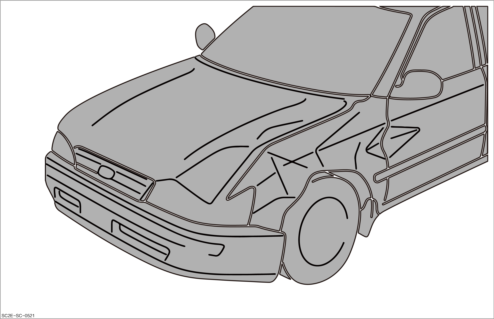
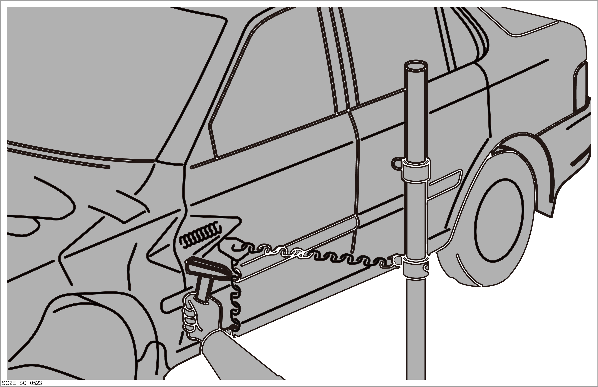
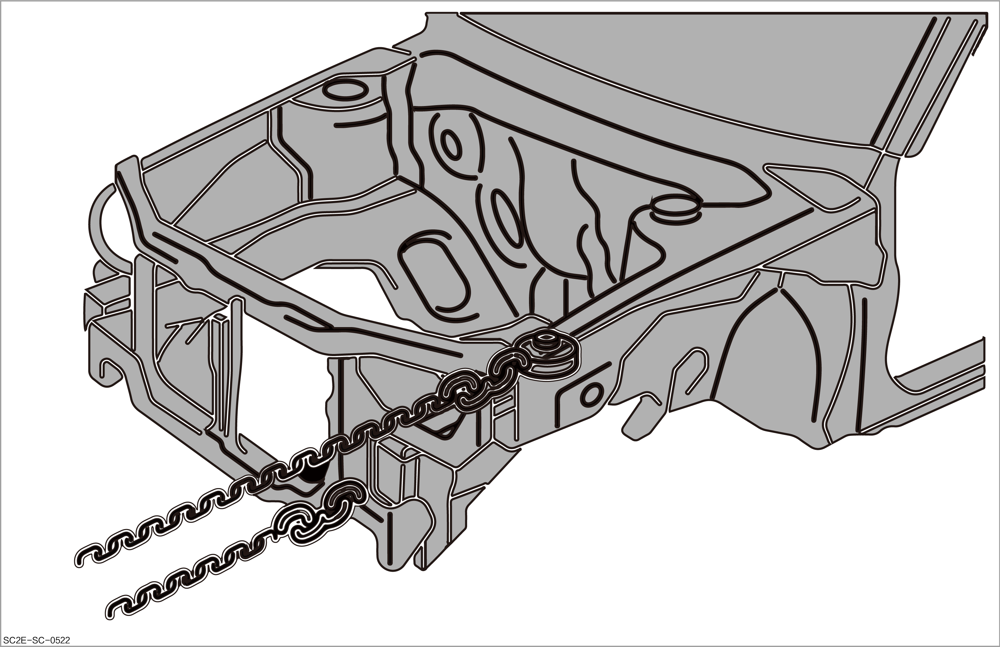
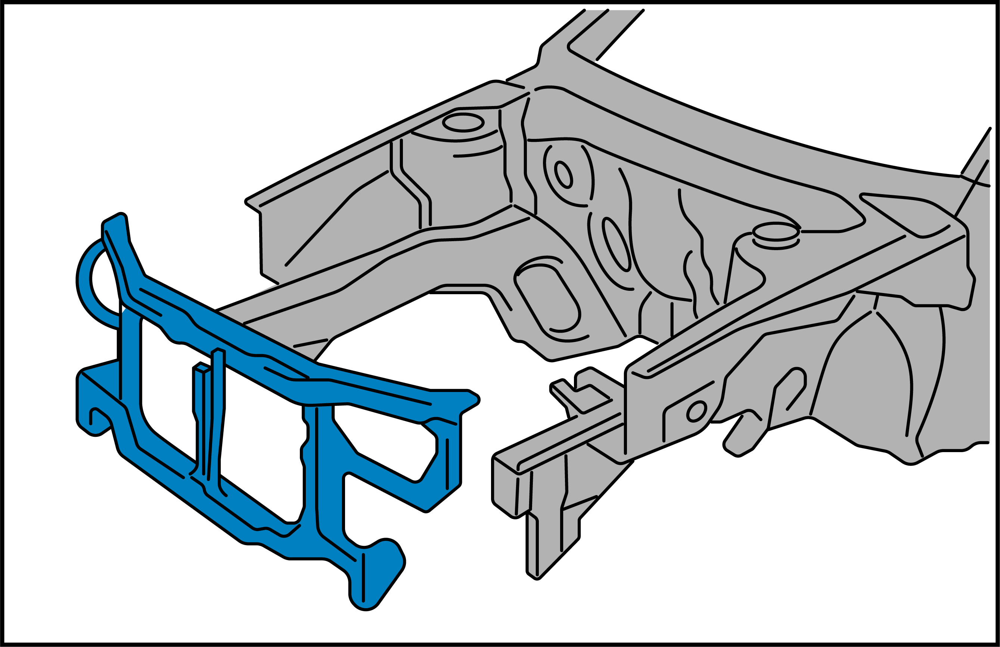
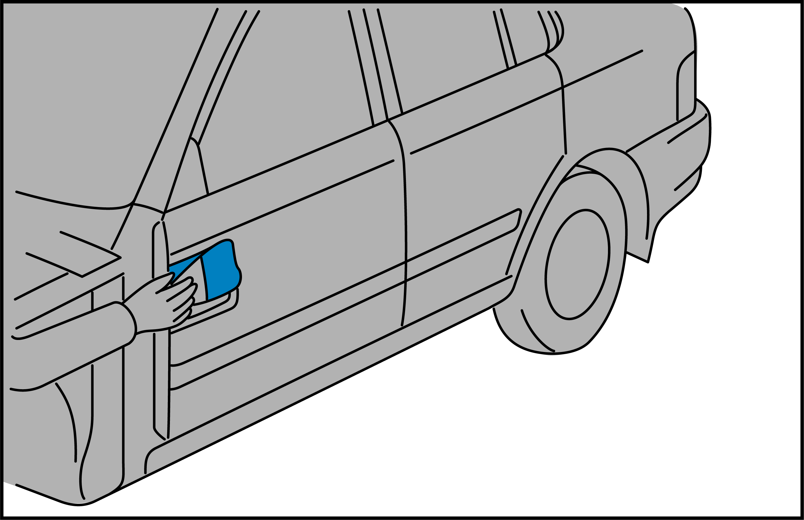
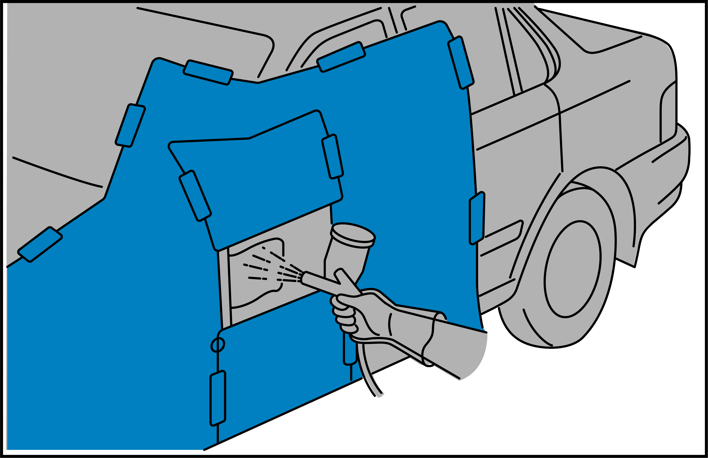
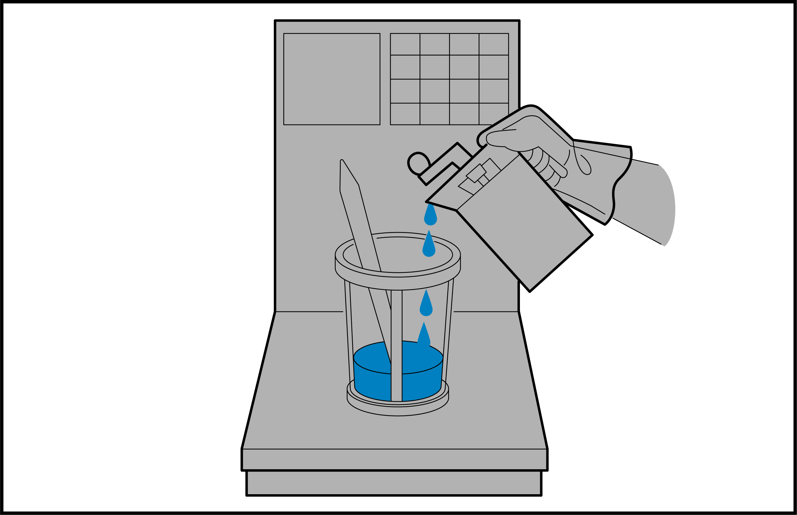
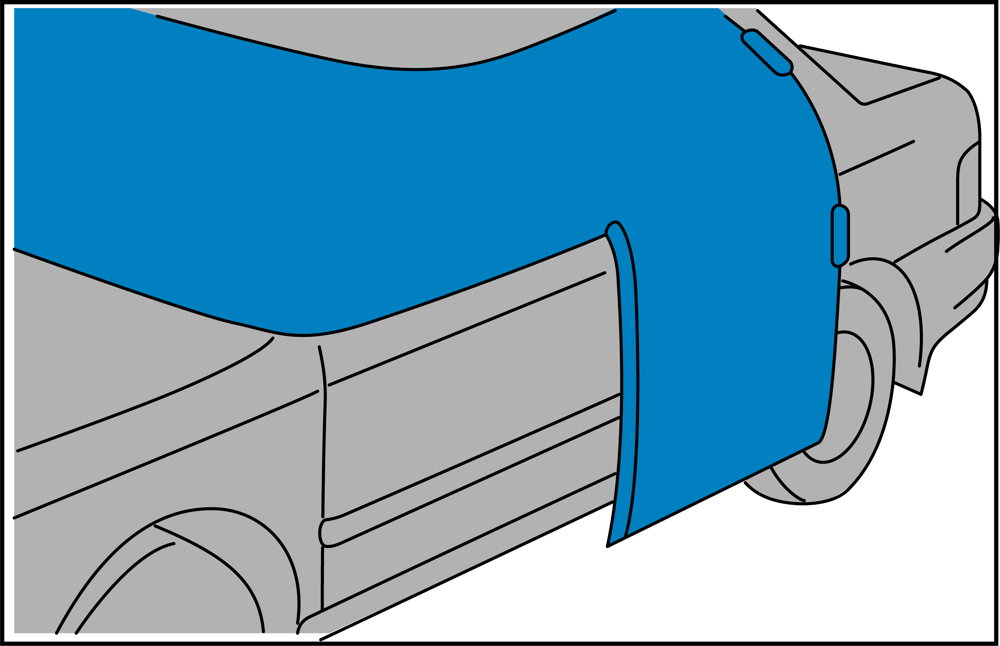
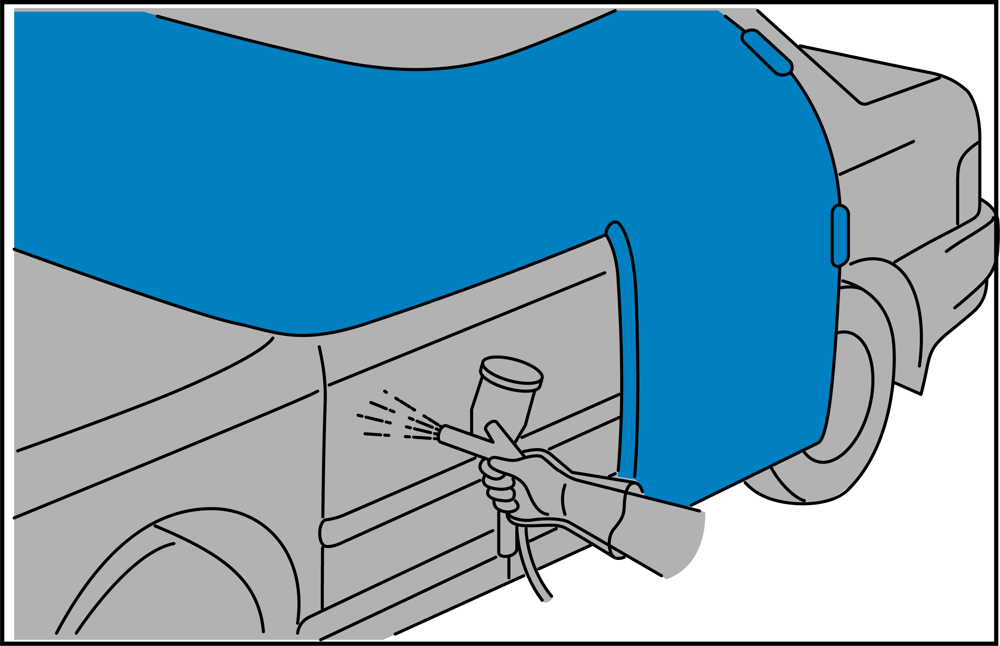
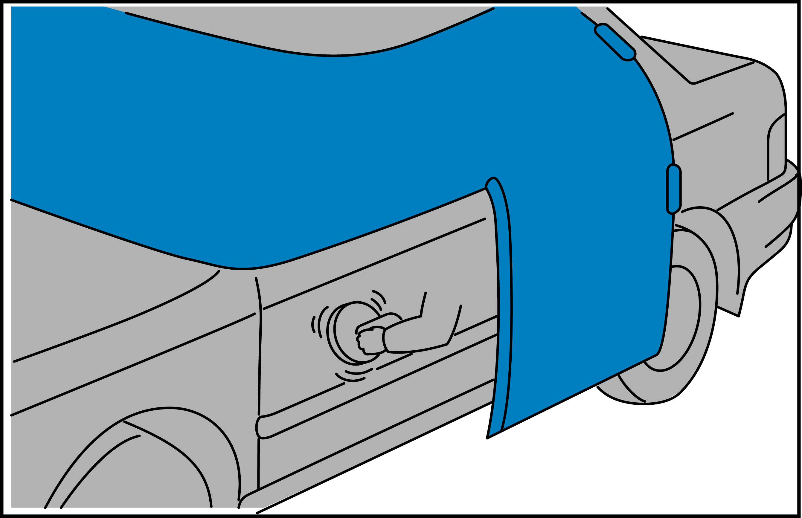

Repair process of damaged vehicle

-
During operation, please take safety protection measures as required. For details of safety protection, please refer to Sheet metal protection and Spraying protection
-
Before operation, please carefully read and observe site safety and vehicle protection. For details, please refer to Site safety and vehicle protection
Evaluation of damage

It is necessary to cooperate with the electromechanical technician to evaluate the vehicle damage.
After the vehicle is damaged, it is necessary to evaluate and confirm the vehicle damage and the necessity for replacing the damaged parts. The main items are as follows:
-
Exterior inspection: Check for the exterior collision, including:
-
Exterior parts: Check whether the bumper, fender, hood, headlight, air inlet grille and other components are damaged or deformed.
-
Chassis parts: Check whether the shock absorber, subframe, steering gear, steering column, lower control arm and other components are damaged.
-
Powertrain: Evaluate whether the engine or drive motor is damaged.
-
Drive system: Evaluate whether the wheels, transmission and other components are damaged.
-
Cooling system: Evaluate whether the coolant pump and coolant pipe are damaged.
-
Electrical system: Evaluate whether the heater, wiring harness and other components are damaged.
-
-
Interior inspection: Check the interior for damage, including the airbag, main and auxiliary instrument panels, PAD, and seats.

Removal of spare parts
Disassemble the evaluated damaged parts as required, including:
-
Electromechanical spare parts: The spare parts shall be operated with assistance of an electromechanical technician. For details, refer to ATTO3 维修手册(2024款-左舵)
-
Sheet metal painting spare parts: Refer to the sheet metal painting manual for operations. For details, refer to Component overview in Replacement of vehicle body sheet metal parts
Repair of steel panel
In case of slight deformation, the exterior parts of the vehicle body can be repaired through drawing, with the operation process as follows:
-
Evaluate the damage type and treatment method of the vehicle body steel panels. Refer to Damage type and treatment method of the vehicle body steel panels
-
Remove old coating from the damaged area.
-
Weld the washer to the deformed area, use a puller to draw the dent and knock to repair the steel panel. Refer to Repair of the vehicle body steel panels
-
Carry out shrinking on areas that have been subjected to drawing repair. Refer to Introduction to sheet shrinking process
-
Provide anti-rust treatment. Refer to Anti-corrosion treatment

Vehicle body alignment

-
Take personal protection when entering the work area. For details, please refer to Sheet metal protection
-
Before operating the equipment, clean up the site first. Do not pile up sundries on and around the platform. Put oil and gas pipes in order to avoid deformation during extrusion. For details, please refer to Site safety and vehicle protection
-
Before use, check whether the equipment is normal, and whether the pulley fixing bolts are loose to avoid personal injury or article damage caused by sliding of the pull tower.
According to the damage degree of the vehicle body, evaluate the vehicle body alignment scheme before the vehicle body alignment, with the operation steps as follows:
-
Secure the vehicle properly to the alignment rack.
-
Measure the vehicle body data to formulate an alignment scheme. Refer to How to measure and align vehicle body
-
Measure whether the data after alignment is correct. Refer to Vehicle body dimensions

Replacement of vehicle body sheet metal parts (in case of difficulty in repair)
Confirm the replacement method of corresponding sheet metal parts. Refer to Replacement of vehicle body sheet metal parts
Replace the parts through welding and other methods, with specific process as follows:
-
After evaluating the scheme, disassemble the old parts.
-
Prepare a new component.
-
Locate and measure the new components.
-
Commission the pre-assembled parts, and check the clearance and flushness.
-
Carry out welding after grinding the joint parts.
-
Carry out anti-rust treatment on the welded parts.

Anti-rust treatment
This step is aimed at some welded parts, with the operation process as follows:
-
Mask the applied positions.
-
Apply wax or epoxy primer to the cavity.
-
Apply the sealant after drying.
For more details, refer to Anti-corrosion treatment
Poly-putty shaping
Fill the damaged panel surface with poly-putty to restore its shape and flatness. Refer to Application of sheet metal poly-putty and Application of plastic poly-putty
-
Dry grinding shall be used throughout the poly-putty grinding to avoid quality problems.
-
Wait until the poly-putty becomes dry before the next step.
-
The efficiency can be improved by forcibly drying the poly-putty with an infrared heating lamp.

Application of intermediate paint
Cover the porous poly-putty surface upon application to prevent the top coat coating from being absorbed by the poly-putty.
The intermediate paint shall be applied after the poly-putty application, so as to make the surface smooth before applying the top coat, with the operation process as follows:
-
Mask non-applied areas.
-
Mix the intermediate paint.
-
Apply the primer from large scope to small scope.
-
Dry the intermediate paint.
-
Grind the primer and old coating of panel.

Color mixing of top coat
-
Mix and weigh the color masterbatch to obtain the same color as that of the applied vehicle body panel. Refer to:

Masking
Special masking paper and film can improve efficiency, and reduce the dust spots and other defects.
It avoids adhering the paint to parts that do not need repair, with the specific process as follows:
-
Remove the dust from the panel and gap.
-
Cover the areas around the panel to be applied that do not need to be sprayed. Refer to Performing masking

Application of top coat
-
It provides the vehicle body with bright color, weather resistance, acid and alkali resistance, ultraviolet ray resistance and other functions, as well as coating effects such as gloss, hardness and fullness. Refer to:
-
Plain paint:
-
Apply Solvent-based plain paint .
-
Apply Water-based plain paint .
-
-
Metallic paint:
-
Apply Solvent-based metallic paint .
-
Apply Water-based metallic paint .
-

-
Drying and polishing
-
Drying: to cure the paint in the applied area in the spray booth. Refer to How to dry
-
Polishing: to restore the gloss of the applied surface. Refer to Performing polishing

Assembly of spare parts
Install spare parts, adjust the gap between panels and restore the original shape of the vehicle, with the operation process as follows:
Completion inspection
Refer to Quality spot checklist of repair process for checking the vehicle quality after repair, with the process as follows:
-
Clean the vehicle
-
Check the spraying quality.
-
Check the assembly quality.
-
Check the vehicle functions.